Algunas fotos de mi cumple n° 23
No tengo fotolog, álbum en Internet o incluso cámara digital de fotos :) Pero gracias a que Meli y César trajeron sus cámaras el 20 pasado durante mi cumpleaños puedo decorar este rincón de la web con algunas fotos lindas. Incluyo las que estuvieron mejor tomadas tratando de que aparezcan todos.
Pablo, Ema, Bruno, Ale y Luis
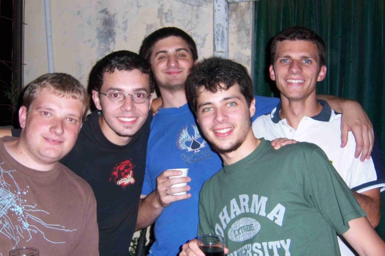
Pablo y Ale
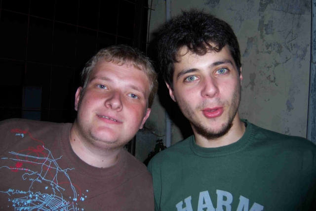
Nico y Juanjo
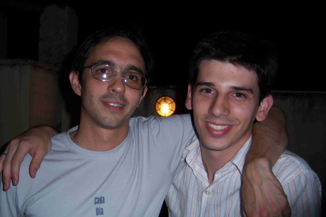
Juanjo y Luis
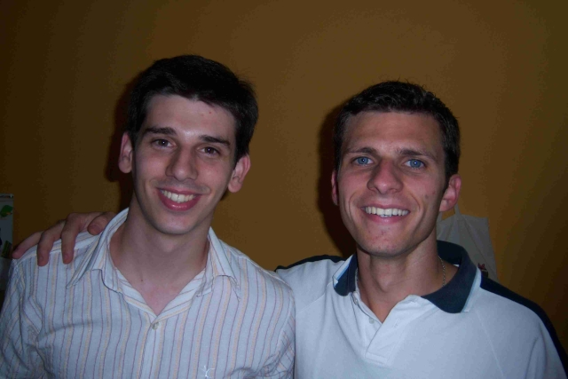
César preparando su famoso Ananá Fizz cacero
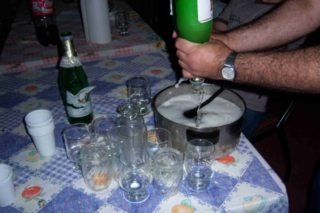
Mary y Luci
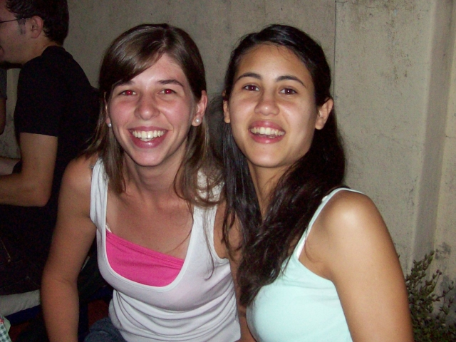
Gonza, Nico, Luis, Santi, Juanjo, Emi, Ale, Ema y Ceci
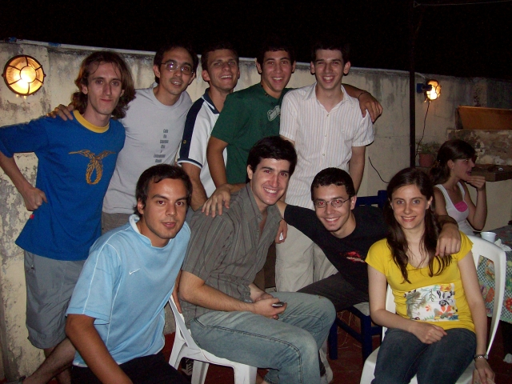
Ceci, Flor, Juanjo César, Manu
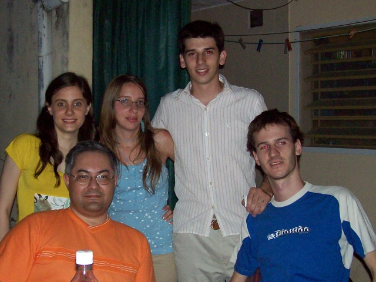
Ceci, Flor, Ale, Juanjo, Barby, Ale, Pablo y Celeste
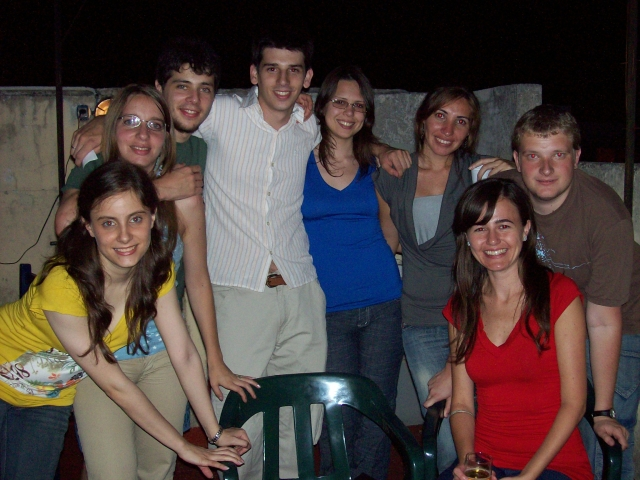
Lau, Meli, Ceci, Barby, Ale, Cele, Juanjo, Ale, Palbo
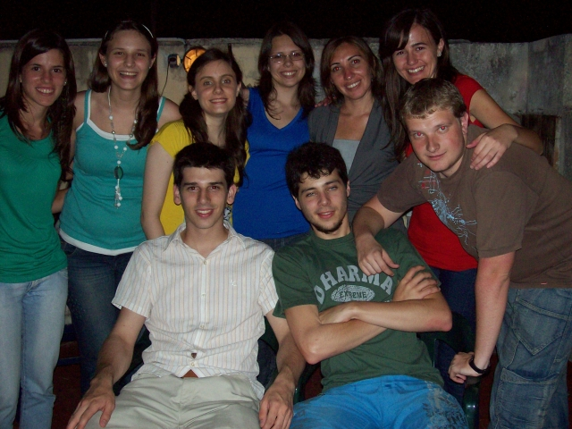
Meli, Juanjo, Ceci, Ale y Ema
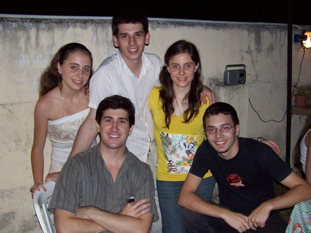
Con las hermanas Puccinelli
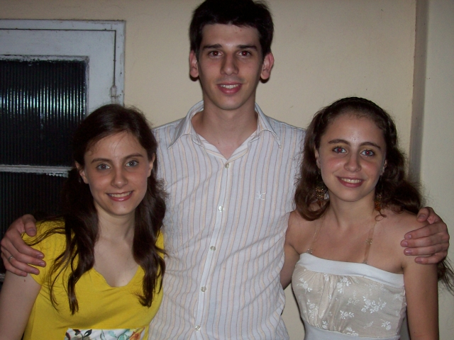
Con Mary
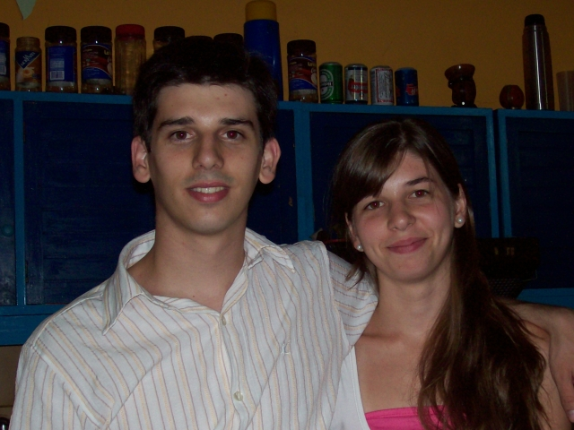
Retoques fotográficos con The GIMP.
Comentarios
Comments powered by Disqus